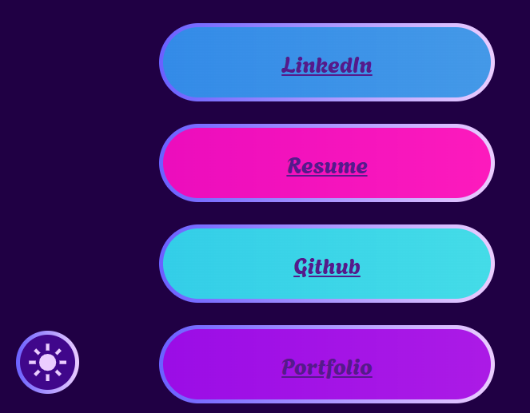
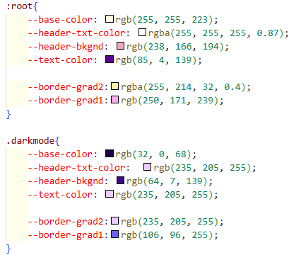
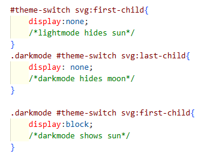
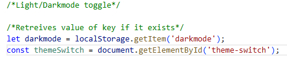
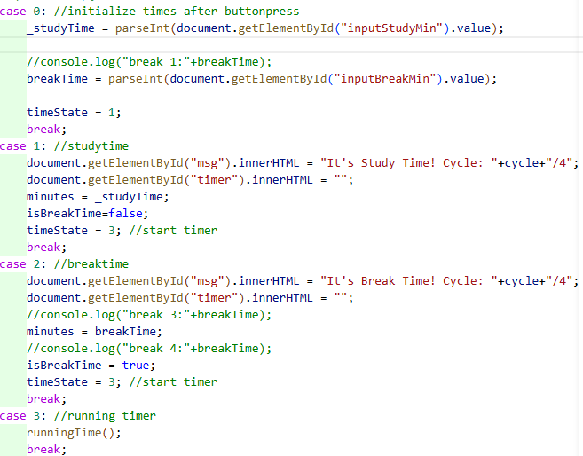
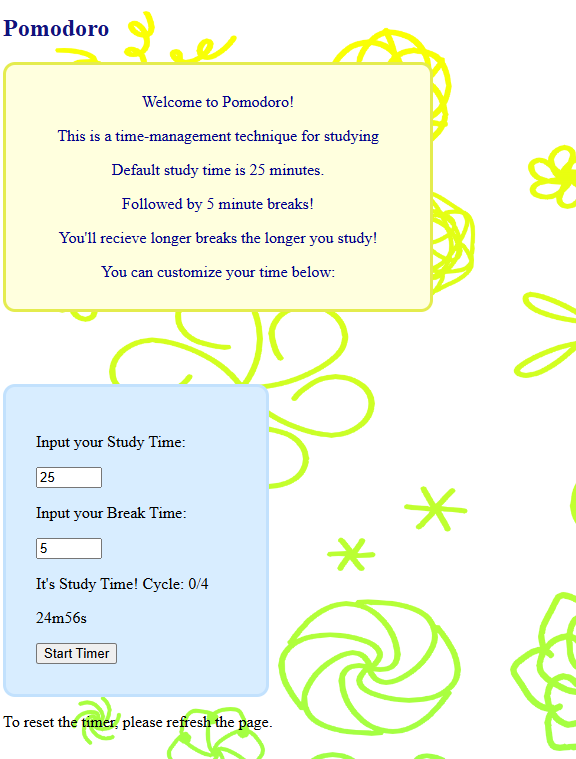
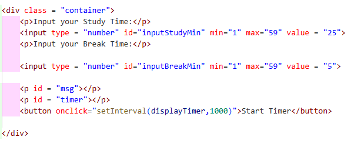
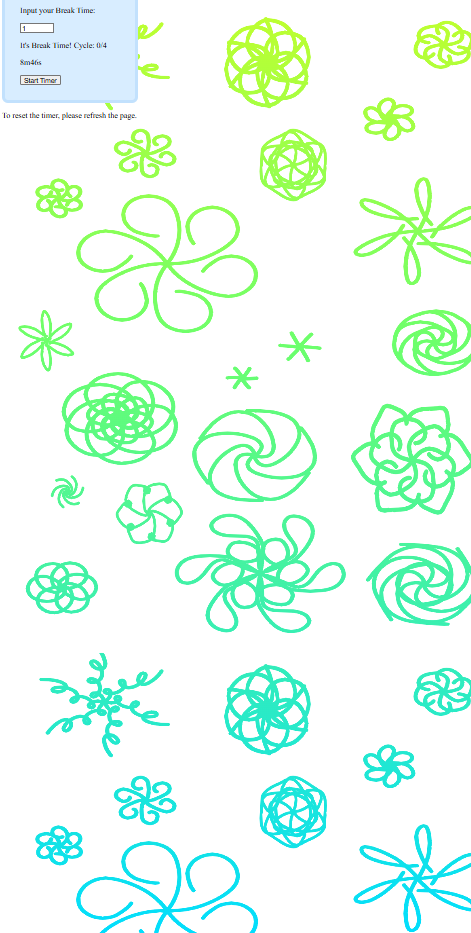

LinkTree was created to be a one stop shop to my professional profile. Working on this project, I learned how to customize background images with clipping to make really cool borders, importing & styling SVG icons, and learned a new way to use classes with darkmode. I was able to write the “.darkmode” class to the body, and with the :root declaration of color palates into variables, it made the transition seamless!
This was also my first introduction to Event Handlers, accessing local storage, setting up a custom font-family, and using pseudo-classes.




Pomodoro was made to be a study companion. It's a common study method used to improve focus, and productivity. On click, a timer will be started, incrementing every 1 second.
I learned how to use java script to print to the browser console, and how to write to html directly using Id’s! I also learned how to overlay a PNG file on top of a gradient using background image.
The code uses case as a state machine, to move between states.


